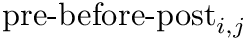
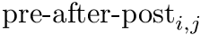

Table of Contents
5.1 Short-Term Plasticity (STP)
CARLsim provides standard equations for short-term plasticity (STP) (also called dynamical synapses). STP is a synaptic plasticity rule that acts on a time scale on the order of 100ms, and contributes to short-term facilitation (STF) or short-term depression (STD) based on pre-synaptic activity. STD is caused by depletion of neurotransmitters consumed during the synaptic signaling process at the axon terminal of a pre-synaptic neuron, whereas STF is caused by influx of calcium into the axon terminal after spike generation, which increases the release probability of neurotransmitters (Senn, Tsodyks, & Markram, 2001; Mongillo, Barak, & Tsodyks, 2008).
5.1.1 Phenomenological Model of STP
CARLsim implements the phenomenological STP model of (Senn, Tsodyks, & Markram, 2001; Mongillo, Barak, & Tsodyks, 2008):

where u- means value of variable u right before spike update, and x+ means value of variable x right after the spike update, and A is the synaptic weight. The STD effect is modeled by a normalized variable (0<=x<=1), denoting the fraction of resources that remain available after neurotransmitter depletion. The STF effect is modeled by a utilization parameter u, representing the fraction of available resources ready for use (release probability). Following a spike, (i) u increases due to spike-induced calcium influx to the presynaptic terminal, after which (ii) a fraction u of available resources is consumed to produce the post-synaptic current. Between spikes, u decays back to zero with time constant STP_tau_u (tau_F), and x recovers to value one with time constant STP_tau_x (tau_D).
In CARLsim, the scaling factor A in (3) is automatically adjusted to the inverse of STP_U. The resulting effect is that the first spike under STP generates the same post-synaptic current as if STP were disabled on that synapse (governed by the synaptic weight set in CARLsim::connect). From there on forward the post-synaptic current will either increase (STF) or decrease (STD).
Source Tsodyks and Wu, 2013.
5.1.2 STP Usage Example
In order to make use of STP in a simulation, STP must be enabled for a group (pre-synaptically):
This will enable STP on all outgoing synapses on all neurons in the group g0. STP parameters will be set to default value (according to the above citation). These default values can be overridden manually by using CARLsim::setDefaultSTPparams.
Alternatively, values for the STP parameters can be specified explicitly:
This will enable STP for group g0, set the increment of u induced by a spike to STP_U=0.45f, set the decay constant of u to STP_tau_u=50.0f ms (also called tau_F), and set the decay constant of x to STP_tau_x=750.0f ms (also called tau_D).
By default, STP is disabled on all groups from the outset.
- Note
- STP will be applied to all outgoing synapses of all neurons in a (pre-synaptic) group.
- All outgoing synapses of a certain (pre-synaptic) neuron share the resources of that same neuron.
- See also
- CARLsim::setSTP(int, bool)
- CARLsim::setSTP(int, bool, float, float, float)
- CARLsim::setDefaultSTPparams
5.2 Spike-Timing Dependent Plasticity (STDP)
CARLsim supports a popular spike-based learning phenomenon called spike-timing dependent plasticity (STDP). STDP is an important form of Hebbian learning where the precise timing of the pre and postsynaptic spike times influence synaptic weight changes. STDP is important because it operates on correlations between spikes and suggests a potential causal (or anti-causal) relationship between pre and postsynaptic spikes (Sjöström and Gerstner, 2010).
The prototypical form of STDP acts as follows: spike-timings where the presynaptic spike arrival precedes postsynaptic spikes by a few milliseconds results in an increase in the synaptic weight, also referred to as long-term potentiation (LTP). Spike-timings where the presynaptic spike arrival follows postsynaptic spikes by a few milliseconds result in a decrease in the synaptic weight. (Bi and Poo, 1998). STDP of this type was observed at glutamatergic (excitatory) synapses.
5.2.1 Phenomenological Model of STDP
Fig. 2 shows a variety of 'STDP Curves' possible using CARLsim. In each sub-figure, the horizontal axis represents the time difference between the time of the presynaptic spike arrival and the time of the postsynaptic arrival or . Therefore,  's to the left of the vertical axis are (pre-after-post) while 's to the right of the vertical axis are
's to the left of the vertical axis are (pre-after-post) while 's to the right of the vertical axis are  (pre-before-post). The vertical axis represents the weight change of the synaptic weight magnitude ( ) at that synapse.
(pre-before-post). The vertical axis represents the weight change of the synaptic weight magnitude ( ) at that synapse.
Source: Beyeler, et al. 2015.
CARLsim has 3 types of STDP: ExpCurve, PulseCurve, and TimingBasedCurve. The phenomenological model for STDP of type ExpCurve found in 2(a-d) and 2(f-i) is as follows.If , then else if , then . The TimeBasedCurve STDP type shown in 2(e) and the PulseCurve STDP type have a similar mathematical structure.
Users can select the specific version of STDP ExpCurve by choosing the and parameters appropriately as these parameters are allowed to take both positive and negative values. Users also select the and exponential decay parameters. Configuration of the PulseCurve and TimingBasedCurve is similar only it should be noted that none of the parameter values may be negative.
CARLsim calculates the change in weight in two components, the pre-before-post component and the pre-after-post component. The change in weights is calculate with the following equation:
where is the weight from presynaptic neuron i, to postsynaptic neuron j, is a bias with a default value of 0, and is the learning rate with a default value of 1. Additionally,  is the pre-before-post weight change contribution and  is the pre-after-post weight change contribution.
It is important to note that CARLsim uses nearest neighbor STDP (Morrison et al. 2008) where each presynaptic spike is paired with the last postsynaptic spike and each postsynaptic spike is paired with the last presynaptic spike to calculate the final weight change due to STDP.
CARLsim characterizes STDP type by both STDP weight change curve (as shown in Fig. 2) and by type of synaptic connection (e.g. excitatory or inhibitory). As mentioned in previous chapters, excitatory synapses bring the postsynaptic neuron closer to its firing threshold while inhibitory synapses bring the postsynaptic neuron away from its firing threshold. The combination of STDP weight change curve and synapse type have functional implications for the neural circuit being constructed. E-STDP is defined as STDP on a connection where the presynaptic neuron groups are excitatory in nature. This is true for E to E and E to I connections. I-STDP is defined as STDP on a connection where the presynaptic neuron groups are inhibitory in nature. Fig. 3 shows illustrates how E-STDP and I-STDP are defined.
- Note
- CARLsim keeps track of the weight change every ms, but updates the weights every second by default. The update frequency of the weights can be changed with the CARLsim::setWeightAndWeightChangeUpdate function.
- Warning
- A common user error is trying to allow for STDP on connections that are fixed, instead of plastic.
5.2.2 Excitatory STDP (E-STDP) and Inhibitory STDP (I-STDP)
The possible types of E-STDP curves are shown in the top row of Fig. 2. The presynaptic group determines the identity of the STDP type (E-STDP or I-STDP). Currently CARLsim supports one set of unique STDP parameters for per STDP type. Therefore, in Fig. 3, the I to E and E to E plastic connections to the exctiatory neuron on the left could have completely different STDP curves (shown in Fig. 2). However, if a third connection were added, like another E to E connection, then STDP parameter values for that E to E connection must be identical to that of the other E to E connection. Users are responsible for choosing realistic STDP parameters all there are reasonable default parameters supplied by CARLsim.
- Since
- v3.0
5.2.3 Dopamine-Modulated STDP (DA-STDP)
The CARLsim dopamine-modulated STDP implementation allows users to easily implement reinforcement learning applications. Dopamine acts as a training signal in the sense that STDP only takes place in the presence of elevated dopamine concentrations. Below is a code snippet that implements dopamine-modulated STDP.
- Since
- v3.0
5.2.4 STDP Usage Example
In order for STDP to be used, the connection between two groups must be plastic as indicated by the SYN_PLASTIC keyword:
Assuming g1 and g2 are excitatory neurons, we should then set the E-STDP parameters:
Notice that the E-STDP call was done on the postsynaptic neuron group (g1) as the first argument. The second argument determines whether or STDP will be enabled and could be set to false as well. The third argument refers to the neuromodulatory effect present at this synapse. STDP without a neuromodulatory influence is referred to by the STANDARD keyword while STDP that is modulated by dopamine is referred to as DA_MOD. Here, we are using the ExpCurve STDP curve.
5.3 Homeostasis
5.3.1 Homeostasis Phenomenological Model
Homeostatic synaptic scaling has been observed experimentally and may serve to stabilize plasticity mechanisms that can otherwise undergo run-away behaviors. CARLsim implements a version of homeostatic synaptic scaling that helps stabilize STDP. Additionally, the synaptic plasticity model implemented by CARLsim is multiplicative in nature, preserving the relative synaptic weight differences between all synapses on a single neuron. Using the same mathematical conventions as in the phenomenological model of STDP discussion, the mathematical model for the synaptic weight update combining both STDP and homeostasis is as follows:
In the equation above, the change in synaptic weight per timestep, is the sum of a homeostatic term plus an STDP term times a stability factor, . Here is the homeostatic scaling factor, is the STDP scaling factor, , is the average firing rate of the neuron over a (relatively) long period of time, is a predetermined target firing rate for the neuron, and is:
Here, is the time over which the firing rate is being averaged and is a tuning factor.
- Since
- v2.0
5.3.1 Homeostasis Usage Example
Some example code below sets the homeostatic scaling factor and the time constant for grp1. The first argument specifies grp1 as the group to enable homeostasis on. The second argument sets the 'enable homeostatis flag' to be true. The homeostatic scaling factor, and the time constant, , are set in arguments 3 and 4, respectively. Finally, the target firing rate for each neuron in grp1 needs to be set with the setHomeoBaseFiringRate function. The first argument specifies the group for which the target firing rate is being set, the second argument is the value of the target firing rate, and the third argument is the standard deviation of the target firing rate. The third argument can be left blank to indicate a standard deviation of the target firing rate with a value of 0.
- Note
- When the standard deviation argument is used in CARLsim::setHomeoBaseFiringRate function, the target firing rate still gets a single value that is constant for the entire simulation.
- The STDP scaling term, , is always equal to 1 in CARLsim simulations. Therefore, to make the homeostatic term , , greater than , you simply set it to a value greater than 1.
- Users new to homeostasis should start with and seconds. This means that STDP component will be 10 times stronger than the homeostatic synaptic scaling component. Setting the time constant for 10.0 seconds is within biologically observed values (Turrigiano, 2008) and a good place to start. In general homeostatic synaptic scaling should take place on a timescale longer than that of a single spike (1 ms). However, be aware that you must run your simulation for long enough to allow for homeostasis to take effect. It's probably a good idea to run your simulation for at least 5 times longer than your time constant, . In general you will probably run your simulations for much longer than this!
- Since
- v2.0
5.4 Disabling Plasticity in a Testing Phase
CARLsim provides a method to temporarily disable all synaptic weight updates, which may be helpful in a testing phase that is trying to evaluate some previously trained network.
The testing phase can be entered via CARLsim::startTesting and exited via CARLsim::stopTesting:
- Since
- v3.1
5.5 References
Beyeler, M., Carlson, K. D., Chou, T. S., Dutt, N., Krichmar, J. L., CARLsim 3: A user-friendly and highly optimized library for the creation of neurobiologically detailed spiking neural networks. (Submitted)
Bi, G. Q. and Poo, M. M. (1998). Synaptic modifications in cultured Hippocampal neurons: dependence on spike timing, synaptic strength, and postsynaptic cell type. J Neurosci, 18:10464-72.
Bi, G. Q. and Poo, M. M. (2001). Synaptic modification of correlated activity: Hebb's postulate revisited. Ann. Rev. Neurosci., 24:139-166.
Mongillo, G, Barak, O., and Tsodyks, M. (2008) Synaptic theory of working memory. Science., 319 (5869): 1543-1546.
Morrison, A., Markus D., and Gerstner, W. (2008). Phenomenological models of synaptic plasticity based on spike timing. Biological Cybernetics 98: 459-478.
Senn, W., Markram, H., and Tsodyks, M. (2001). An algorithm for modifying neurotransmitter release probability based on pre- and post-synaptic spike timing. Neural Comput, 13:35-67.
Sjöström, J. and Gerstner, W. (2010) Spike-timing dependent plasticity. Scholarpedia, 5 (2):1362., revision #142314
Tsodyks, M. and Wu, S. (2013) Short-term synaptic plasticity. Scholarpedia, 8(10):3153., rev #136920
Turrigiano, G., G., (2008) The self-tuning neuron: synaptic scaling of excitatory synapses. Cell 135: 422-435.